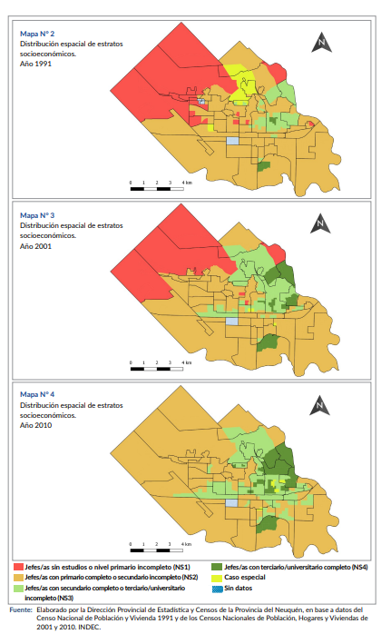

Bol 190. Distribución espacial de estratos socioeconómicos en la ciudad de Neuquén 1991, 2001 y 2010

Bol 190. Distribución espacial de estratos socioeconómicos en la ciudad de Neuquén 1991, 2001 y 2010
Bol 193. Hidrocarburos: Evolución espacial y temporal de la producción. Pozos vs. producción de petróleo y gas, 2008–2018.

Bol 207. Centrales eléctricas asociadas a la producción de hidrocarburos.
Tablero de análisis de operaciones en Looker Studio.
Tablero de análisis de ventas en Power BI.